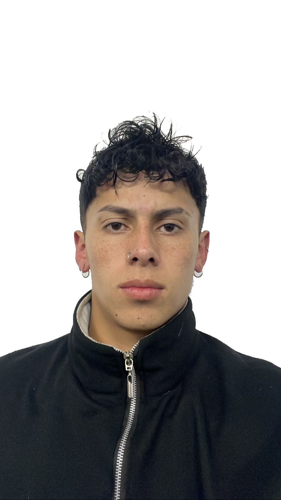

JHOLMAN CAMILO MARTINEZ RINCON
"Soy un apasionado profesional de la salud y el bienestar, especializado en la implementación de pausas activas en entornos laborales y educativos. Mi objetivo es promover la salud física y mental de las personas a través de la integración de pausas activas en su rutina diaria. Mi enfoque se basa en la investigación y la aplicación práctica de técnicas efectivas para reducir el sedentarismo y el estrés, mejorando así la productividad y el bienestar general."